Adaptive Skip
A run-time adaptive skip classifier to opportunistically skip redundant semantic segmentation computations and local re-planning. Adaptive skip reduces 40.2% of segmentation and runs 18.4% faster for a full action step.
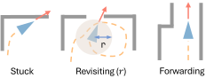 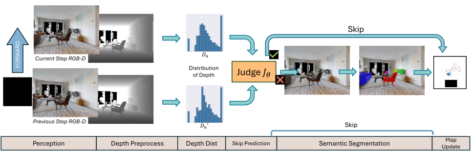 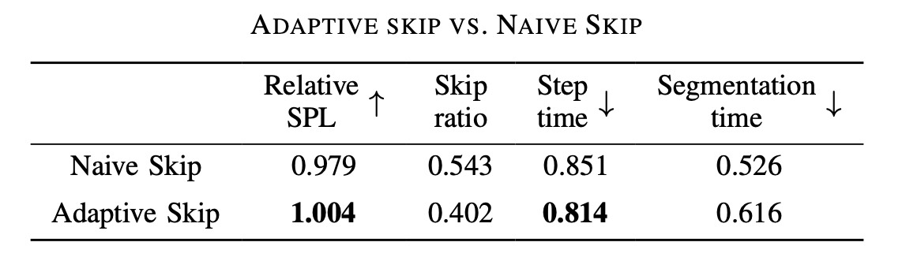In ObjectNav, agents must locate specific objects within unseen environments, requiring effective perception, prediction, localization and planning capabilities. This study finds that state-of-the-art embodied AI agents compete for higher navigation quality, but often compromise the computational efficiency.
To address this issue, we introduce Skip-SCAR, an optimization framework that builds computationally and memory-efficient embodied AI agents to accomplish high-quality visual navigation tasks. Skip-SCAR opportunistically skips the redundant step computations during semantic segmentation and local re-planning without hurting the navigation quality. Skip-SCAR also adopts a novel hybrid sparse and dense network for object prediction, optimizing both the computation and memory footprint.
Tested on the HM3D ObjectNav datasets and real-world physical hardware systems, Skip-SCAR not only minimizes hardware resources but also sets new performance benchmarks, demonstrating the benefits of optimizing both navigation quality and computational efficiency for robotics.
A run-time adaptive skip classifier to opportunistically skip redundant semantic segmentation computations and local re-planning. Adaptive skip reduces 40.2% of segmentation and runs 18.4% faster for a full action step.
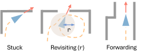 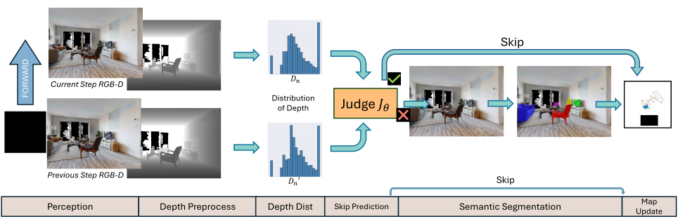 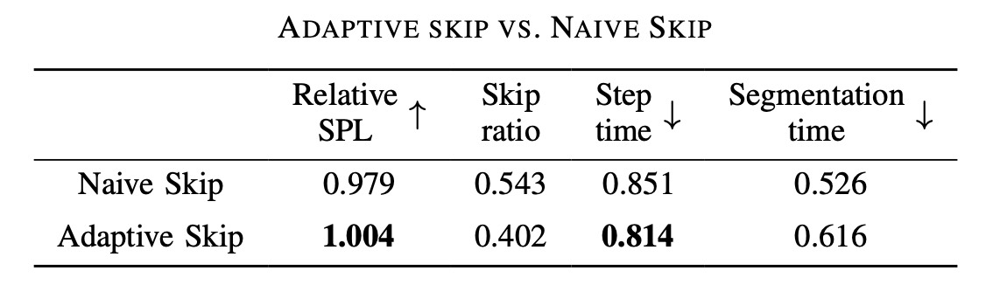SparseConc-Augmented ResNet (SCAR) is a hybrid model that leverages input data sparsity to significantly reduce memory usage and computation while enhancing performance. SCAR achieves a 10.1 % higher SPL while reducing >70% memory footprint compared to baseline ResNet50.
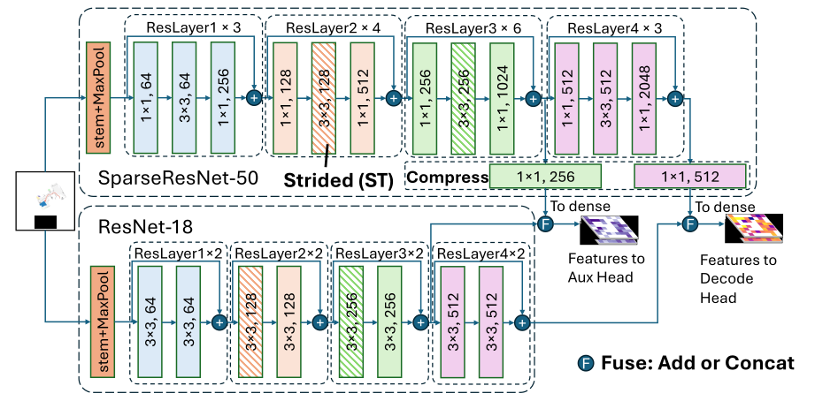 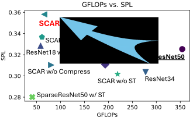Skip-SCAR ranks first in the habitat challenge leaderboard , among all published methods.
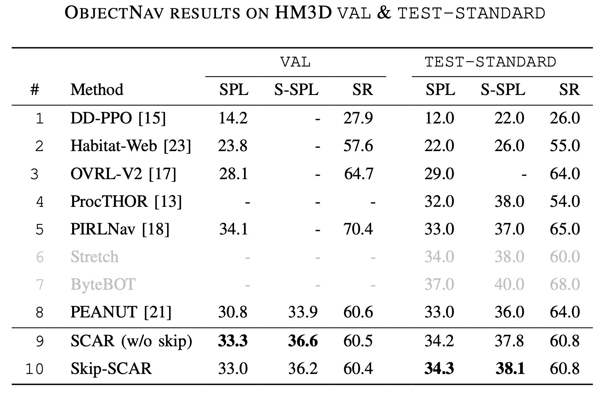On a GPU server, Skip-SCAR runs 18.6% faster and uses 51.2% less memory. On a 4-thread CPU, it runs 34.4% faster.
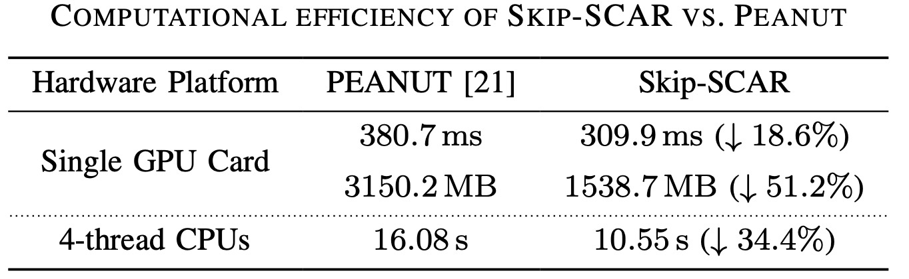 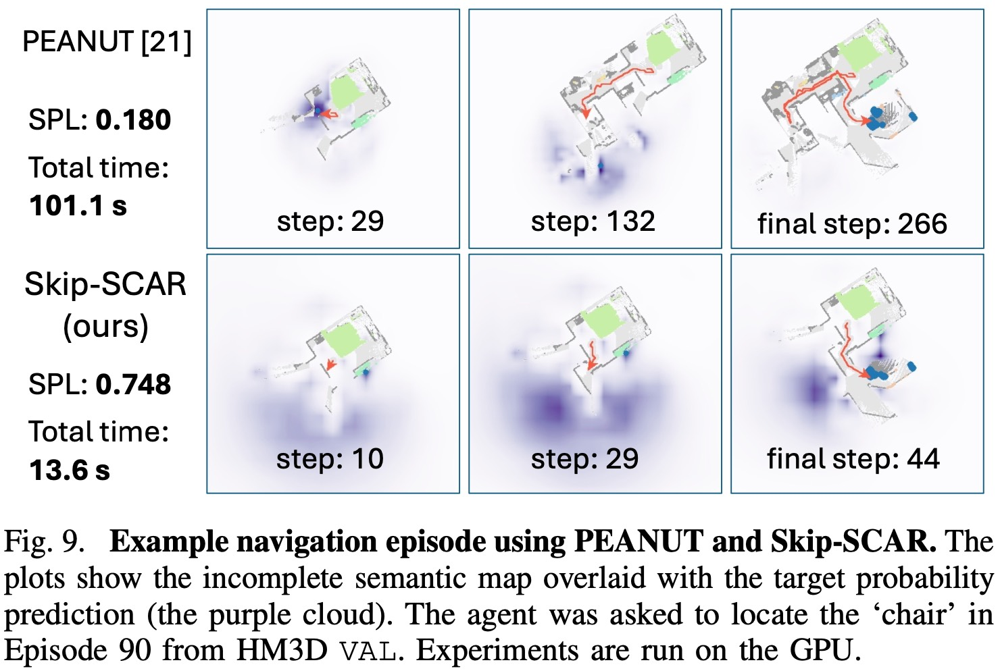The baseline model is PEANUT, which is a state-of-the-art embodied AI agent for ObjectNav.
The SCAR model is built upon SparseConvNet and TorchSparse.
@article{liu2024skip,
title={Skip-SCAR: Hardware-Friendly High-Quality Embodied Visual Navigation},
author={Liu, Yaotian and Cao, Yu and Zhang, Jeff},
journal={arXiv preprint arXiv:2405.14154},
year={2024},
url={https://arxiv.org/abs/2405.14154},
}